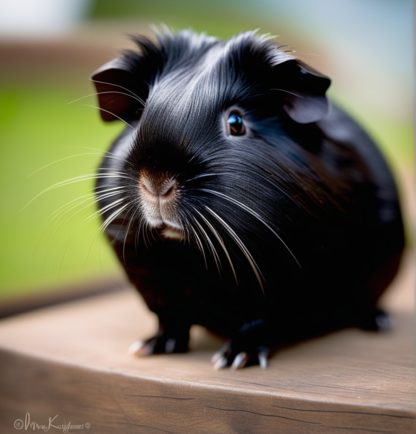

|  |
En la actualidad, existen varias razas de cobayos, también conocidos como cuyos, que han sido seleccionadas y criadas por los seres humanos para convertirse en encantadoras mascotas. Estas criaturas pequeñas y peludas se han ganado el corazón de muchos dueños debido a su naturaleza amigable, sus vocalizaciones adorables y su capacidad para formar vínculos estrechos con las personas.
Los cobayos poseen un sentido agudo del oído y un olfato desarrollado que les permite explorar su entorno y comunicarse entre ellos. Aunque no son animales que se comunican a través de ladridos o maullidos, los cobayos emiten diversos sonidos, como chillidos y gorjeos, para expresar emociones y necesidades. A pesar de su tamaño pequeño, los cobayos son animales inteligentes y curiosos. Pueden reconocer a sus cuidadores, aprender a asociar ciertos sonidos con la comida y disfrutan de la interacción social. Además, son criaturas sociables que se benefician de la compañía de otros cobayos, mostrando comportamientos de juego y afecto.